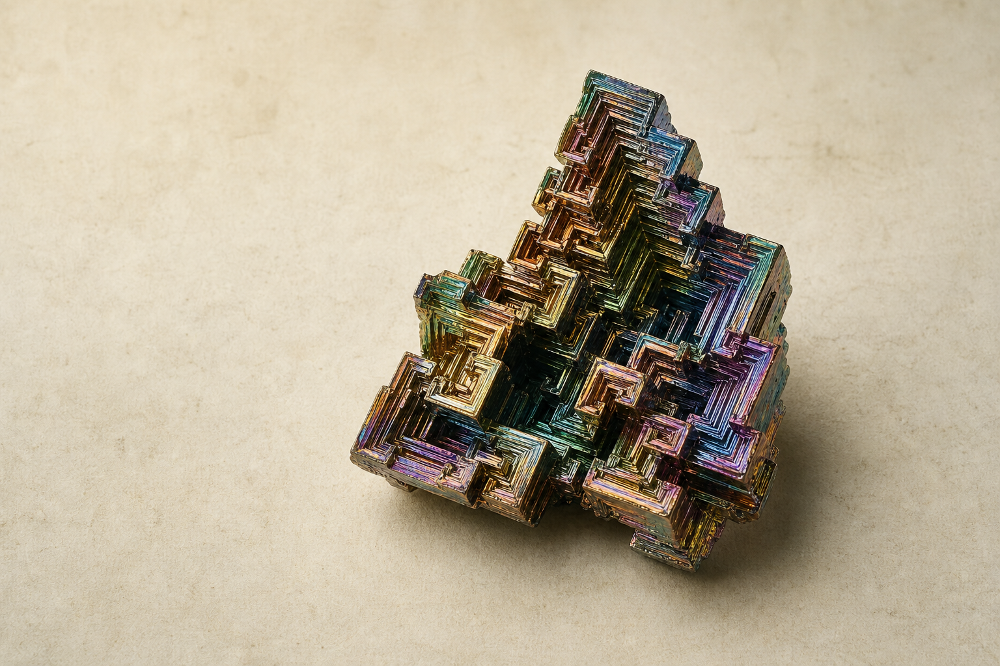

01
Scientific editorial / Museum
The Living Catalogue
Knowledge as a beautifully edited collection: tactile, storied and made to last.
Vol. 01 / The material world
Every thing begins
Every thing begins
with an element.
Explore the 118 building blocks of matter through a living catalogue of structures, properties, histories and relationships.
Begin with the periodic table
I / Periodic catalogue
A map of every known element.
Read by family, state, discovery or any measurable property.
II / Field notes
Chemistry has a human history.
How Mendeleev left space for the unknown
A periodic table is not only an answer. It is one of science's most productive questions.
Read the essay